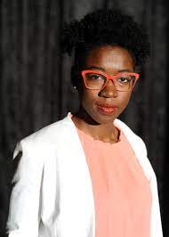

A mulher lutando contra o preconceito em algoritmos
A poeta do código também é uma ativista digital. Joy Buolamwini, cientista da computação do MIT, trabalha para que os softwares de reconhecimento facial também sejam eficientes para mulheres e homens negros. Joy nasceu no Canadá e cresceu nos Estados Unidos, mas tem ascendência africana, do país de Gana. Como mulher negra, desenvolveu um olhar crítico para a tecnologia que, muitas vezes falta em equipes predominantemente formada por pessoas brancas. Tal diferencial possibilitou a criação de um acordo internacional que regula o uso da tecnologia artificial de reconhecimento facial.
Pesquisadora encontra tendências sexistas e racistas em 'sistemas de inteligência artificial comerciais'